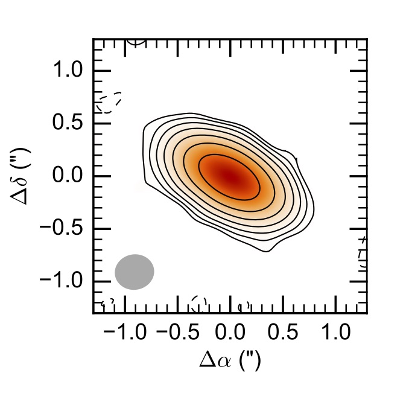

A quickstart example¶
In this page we show how to use galario in some typical use cases, e.g. the fit of some interferometric data sets.
galario has been designed to simplify and accelerate the task of computing the synthetic visibilities given a model image, leaving to the user the freedom to choose the most appropriate statistical tool for the parameter space exploration.
For the purpose of these examples we will adopt a Bayesian approach, using Monte Carlo Markov chains to explore the parameter space and to produce a sampling of the posterior probability function. In particular, we will use the MCMC implementation in the emcee Python package.
In this page we will show how to fit the mock observations of a protoplanetary disk. In particular, in the example we will analyse mock visibilities of the disk continuum emission at \(\lambda=\) 1 mm whose synthetized map is shown in this figure:
{kind=link}
Fit of a single-wavelength data set¶
1) Import the uv table
First, let’s import the table containing the interferometric observations. Typically, an interferometric data set can be exported to a table containing the \((u_j, v_j)\) coordinates (\(j=1...M\)), the Real and Imaginary part of the complex visibilities \(V_{obs\ j}\), and their theoretical weight \(w_{j}\), for example:
u [m] v [m] Re [Jy] Im [Jy] w ------------------------------------------------------------------------- -155.90093 234.34887 0.01810 0.13799 200.05723 9.290660 362.97853 -0.05827 0.02820 216.95405 95.23531 109.22704 0.06314 -0.16727 167.18789 94.01319 251.97293 0.01974 0.04358 179.69114 -60.45751 211.33346 0.14856 -0.07756 188.09953 91.59843 68.94947 0.12741 -0.12871 156.32432 23.29531 251.71338 0.01568 -0.12316 189.58017 -135.83509 -29.77982 -0.02017 -0.00010 207.29354 59.38624 144.99431 0.04759 -0.08606 201.32301 192.43093 171.57617 -0.02176 -0.02661 208.52030 -243.91416 76.18790 -0.02306 -0.01430 207.16036 58.72442 276.64959 0.03325 0.04560 173.15922 35.56591 111.28235 0.03777 -0.11856 194.83899 ... ... ... ... ...A table like this one can be read with:
u, v, Re, Im, w = np.loadtxt("uvtable.txt", unpack=True) wle = 1e-3 # [m] u /= wle v /= wlewhere the \(u_j\) and \(v_j\) coordinates have been converted in units of the observing wavelength, 1 mm in this example.
- 2) Determine the image size
Once imported the uv table, we can start using galario to compute the optimal image size
from galario.double import get_image_size nxy, dxy = get_image_size(u, v, verbose=True)
where the returned values are the number of pixels (
nxy) and the pixel size (dxy) in radians.nxyanddxyare chosen to fulfil criteria that ensure a correct computation of the synthetic visibilities. For more details, refer to Sect. 3.2 in Tazzari, Beaujean and Testi (2017).- 3) Define the brightness model
Let us define the model: for this example, we will use a very simple Gaussian profile:
from galario import arcsec def GaussianProfile(f0, sigma, Rmin, dR, nR): """ Gaussian brightness profile. """ # radial grid R = np.linspace(Rmin, Rmin + dR*nR, nR, endpoint=False) return f0 * np.exp(-0.5*(R/sigma)**2)
where
f0(Jy/sr) is a normalization,sigmais the width of the Gaussian,Rminis the innermost radius of the grid,dRis the size of radial grid andnRis the number of radial grid cells.sigma,Rmin,dRshould be passed toGaussianProfile()in arcseconds andf0in Jy/sr.- 4) Setup the MCMC Ensemble Sampler
In our fit we will have 6 free parameters: on top of the model parameters
f0andsigmawe want to fit the inclinationinc, the position anglePA, and the angular offsets \((\Delta RA, \Delta Dec)\) with respect to the phase center. Following the notation of the emcee documentation, we initialise the EnsembleSamplerfrom emcee import EnsembleSampler # radial grid parameters Rmin = 1e-4 # arcsec dR = 0.01 # arcsec nR = 2000 # parameter space domain p_ranges = [[1, 20], [0., 8.], [0., 90.], [0., 180.], [-2., 2.], [-2., 2.]] ndim = len(p_ranges) # number of dimensions nwalkers = 40 # number of walkers nthreads = 4 # CPU threads that emcee should use sampler = EnsembleSampler(nwalkers, ndim, lnpostfn, args=[p_ranges, Rmin, dR, nR, nxy, dxy, u, v, Re, Im, w], threads=nthreads)
where:
p_rangesis a rectangular domain in the parameter space that defines the search region;lnpostfnis the posterior probability function;argsdefines an array of fixed parameters thatlnpostfntakes additionally in input.
- 5) Define the posterior and the prior probability functions
Let us now implement the posterior function, using galario to compute the \(\chi^2\). Since in this example we are assuming an axisymmetric brightness profile we will use the
chi2Profilefunction, but the same design holds for thechi2Imagefunction that should be used for non-axisymmetric profiles.from galario import deg, arcsec from galario.double import chi2Profile def lnpostfn(p, p_ranges, Rmin, dR, nR, nxy, dxy, u, v, Re, Im, w): """ Log of posterior probability function """ lnprior = lnpriorfn(p, p_ranges) # apply prior if not np.isfinite(lnprior): return -np.inf # unpack the parameters f0, sigma, inc, PA, dRA, dDec = p f0 = 10.**f0 # convert from log to real space # convert to radians sigma *= arcsec Rmin *= arcsec dR *= arcsec inc *= deg PA *= deg dRA *= arcsec dDec *= arcsec # compute the model brightness profile f = GaussianProfile(f0, sigma, Rmin, dR, nR) chi2 = chi2Profile(f, Rmin, dR, nxy, dxy, u, v, Re, Im, w, inc=inc, PA=PA, dRA=dRA, dDec=dDec) return -0.5 * chi2 + lnprior
where the normalization
f0is explored in the logarithmic space to achieve a faster convergence andlnpriorfnis the prior probability function defined as a uniform prior:def lnpriorfn(p, par_ranges): """ Uniform prior probability function """ for i in range(len(p)): if p[i] < par_ranges[i][0] or p[i] > par_ranges[i][1]: return -np.inf jacob = -p[0] # jacobian of the log transformation return jacob
which, up to a constant, basically checks that
plies inside the rectangular domain defined by the extents inp_ranges.- 6) Ready to go: run the MCMC!
We are now ready to start the MCMC:
nsteps = 3000 # total number of MCMC steps # initial guess for the parameters p0 = [10, 0.5, 70., 60., 0., 0.] # 3 parameters for the model + 4 (inc, PA, dRA, dDec) # initialize the walkers with an ndim-dimensional Gaussian ball pos = [p0 + 1e-4*np.random.randn(ndim) for i in range(nwalkers)] # execute the MCMC pos, prob, state = sampler.run_mcmc(pos, nsteps, rstate0=state, lnprob0=prob) # plot the resulting MCMC import corner samples = sampler.chain[:, -1000:, :].reshape((-1, ndim)) fig = corner.corner(samples, labels=["$f_0$", "$\sigma$", r"$i$", r"PA", r"$\Delta$RA", r"$\Delta$Dec"], show_titles=True, quantiles=[0.16, 0.50, 0.84], label_kwargs={'labelpad':20, 'fontsize':0}, fontsize=8) fig.savefig("triangle_example.png")
At the end of the run, which takes approx. 5-8 mins. on a laptop with an Intel i5 2.9GHz, you should obtain an image of the MCMC like the one below, on the left. As a check of the fit, using
sampleProfileinstead ofchi2Profilein the right figure we compute the bestfit model (here taken as the median of the MCMC) and plot its deprojected visibilities against the data.

- 7) CPU vs GPU execution
So far we have run galario on the CPU. Running it on a GPU can be done by just changing the import at the beginning:
from galario import double_cuda as g_double
All the rest of the code remains the same!
For more details on the GPU vs CPU execution, see the Cookbook.